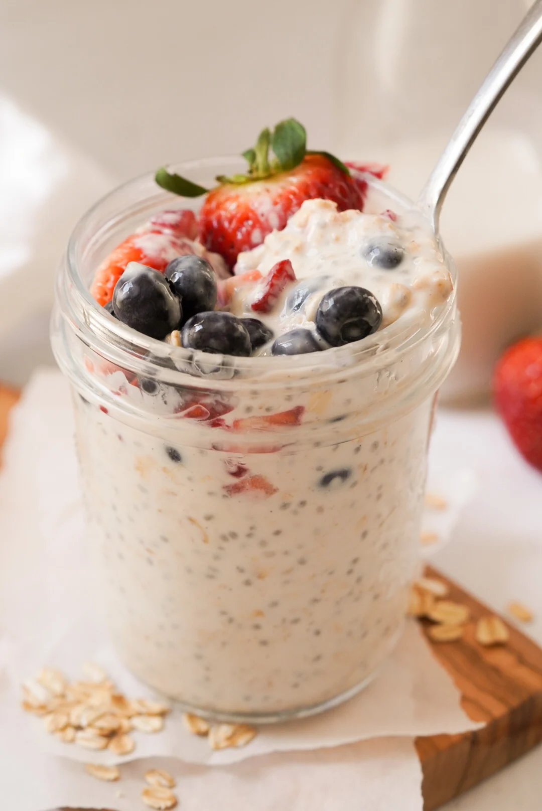

Best Breakfast Ever Overnight Oats

So easy even the worst chef can make this
Ingredients
- 1 cup oats
- 1 cup milk/yoghurt
- 1 cup water
- Mix-ins, I like: chia seeds, coconut flakes, frozen berries, anything you like really. Maybe not chicken
What to do
- Mix together all ingredients
- Leave in fridge for at least two hours, preferably overnight
- Enjoy your delicious breakfast